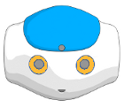
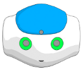
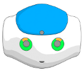
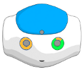
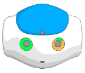

Animation Mode¶
What is the Animation Mode¶
The Animation Mode allows you to create movements easily, in conjunction with the Timeline Editor. In this mode, the robot behaves like a puppet that you can manipulate, letting you record its posture in a Timeline.
Getting started with the Animation Mode¶
 Cannot be used on a virtual robot.
Cannot be used on a virtual robot.
Starting an animation¶
To start an animation using Animation Mode:
| Step | Action |
|---|---|
| Make sure Choregraphe is connected to a real robot. | |
Make sure Life is off. For further details, see: Switching Autonomous life on and off. |
|
Create a Timeline box. For further details, see: How to create a Timeline box. |
|
| Double-click the box in order to display the Timeline. | |
Click the  Wake up button in the toolbar. Wake up button in the toolbar. |
|
Click the The button turns red: |
|
| Hold your robot by the waist or the torso to prevent it from falling down. |
 Animation Mode button.
Animation Mode button. , meaning the
Animation Mode is on.
, meaning the
Animation Mode is on.Defining and storing postures¶
To define and store postures, repeat the following steps for each posture:
| Step | Action |
|---|---|
| Use Stiffness-control tactile commands to manipulate its limbs one by one in order to make the robot take the posture you want to store. | |
Tap the head tactile sensors with your hand: The current posture is stored at the Insertion point of the Timeline which then moves automatically forward. |
Exiting Animation Mode¶
To exit the Animation Mode:
| Step | Action |
|---|---|
The button turns green: |
Note: if Choregraphe is disconnected from your robot, the Animation Mode is automatically stopped .
Stiffness-control tactile commands¶
You can use tactile commands to manage the stiffness:
| Limb | Stiffness control |
|---|---|
| Head | Touch the middle head tactile sensor to toggle the stiffness. |
| Arms | Keep touching hand tactile sensors to maintain stiffness off. Note: if your robot does not have such sensors, touch the back and front head tactile sensors to toggle the stiffness of each arm. |
| Legs | Press the foot bumpers to toggle the stiffness. |
Visual feedback¶
A visual feedback let you know which limb is currently stiffened or not:
- Yellow means that the Stiffness is On,
- Green means that the Stiffness is Off.
| Limb | Visual Feed-back location |
|---|---|
| Head | Upper Eye LEDs. |
| Arms | All Eye LEDs (except upper). |
| Legs | Foot LEDs. |
| Visual information | Stiffened parts | Visual information | Stiffened parts |
|---|---|---|---|
|  | Head and both arms |  | Nothing |
|  | Head |  | Head and right arm |
|  | Left arm | Right arm |